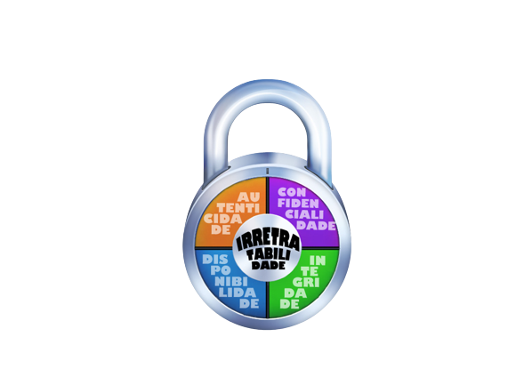

Os princípios básicos de segurança em páginas web são fundamentais para garantir a proteção dos usuários e a integridade dos dados. Aqui está um resumo dos principais princípios:
Criptografia de dados: A criptografia é essencial para proteger a confidencialidade dos dados transmitidos entre o navegador do usuário e o servidor da página web. Isso envolve o uso de protocolos seguros, como HTTPS, que criptografam os dados durante a transferência, tornando-os inacessíveis a terceiros não autorizados.
Autenticação e controle de acesso: É importante implementar sistemas de autenticação robustos para verificar a identidade dos usuários e controlar o acesso a recursos sensíveis. Isso pode incluir a utilização de senhas fortes, autenticação de dois fatores e políticas de controle de acesso baseadas em papéis, garantindo que apenas usuários autorizados possam acessar determinadas áreas da página web.
Atualizações e correções de segurança: Manter a página web atualizada com as versões mais recentes de software, frameworks e plugins é essencial para evitar vulnerabilidades conhecidas. Além disso, aplicar rapidamente patches e correções de segurança ajuda a evitar que hackers explorem essas vulnerabilidades.
Proteção contra ataques de força bruta: Implementar mecanismos de proteção contra ataques de força bruta é importante para evitar que os hackers adivinhem senhas ou tentem várias combinações para acessar contas de usuário. Isso pode ser feito por meio do uso de bloqueio temporário de contas após várias tentativas fracassadas de login ou a utilização de captchas para distinguir humanos de bots.
Auditoria e monitoramento de segurança: Registrar e monitorar atividades suspeitas na página web é essencial para identificar e responder a possíveis violações de segurança. Isso inclui o monitoramento de logs de acesso, análise de tráfego e a implementação de sistemas de detecção de intrusões para identificar atividades maliciosas.
Educação e conscientização dos usuários: Promover a conscientização dos usuários sobre as melhores práticas de segurança é crucial. Isso envolve fornecer orientações claras sobre a criação de senhas seguras, evitar o compartilhamento de informações confidenciais e estar atento a práticas de phishing e outras formas de engenharia social.
Em resumo, os princípios básicos de segurança em páginas web incluem a criptografia de dados, autenticação adequada, atualizações e correções, validação e filtragem de entrada de dados, proteção contra ataques de força bruta, auditoria e monitoramento de segurança, e educação dos usuários. Implementar esses princípios ajuda a reduzir os riscos de violações de segurança e a proteger os usuários